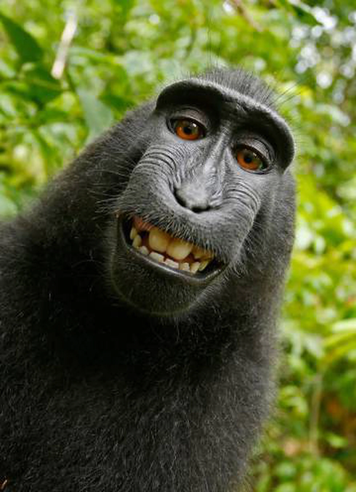
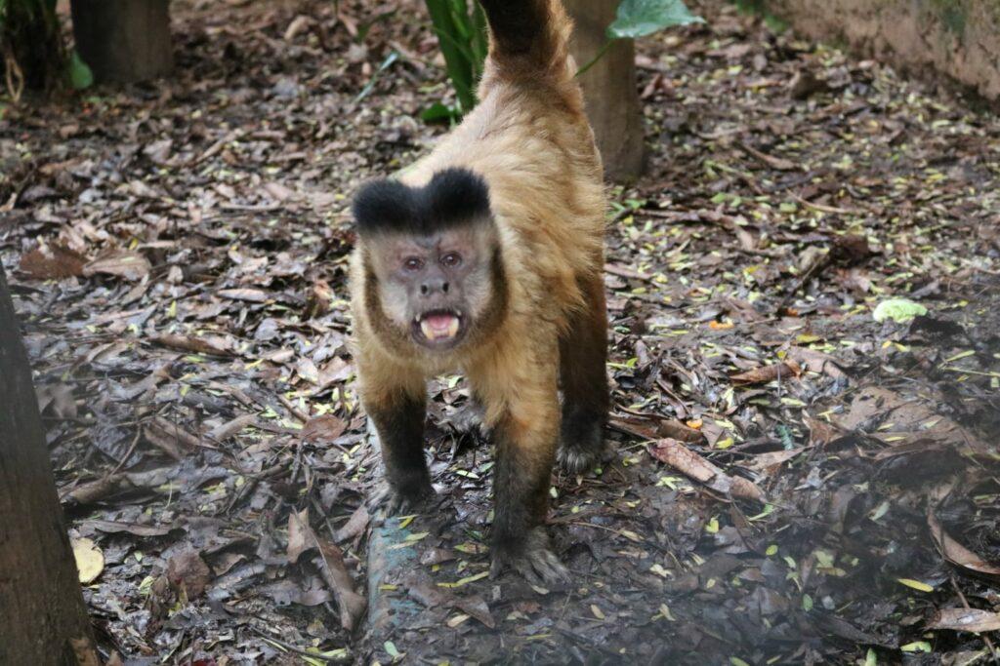

Hello Macaco

Naruto sorriu. E apertou o botão. Clique.
Ainda não se sabe por que o macaco teria se aproximado
da câmera que o fotógrafo David Slater tinha deixado sobre um
tripé. Mas a verdade é que a tocou e disparou. Assim, o macaco conseguiu
fazer um selfie. Como milhões de seres humanos. Embora, claro, seja um animal.
Nem Naruto nem qualquer cérebro humano, de qualquer forma, poderia imaginar que,
naquele dia de 2011, começaria uma história de seis anos, debates,
ações judiciais, falências e milhares de euros que, da selva da Indonésia,
terminaria diante de um tribunal de San Francisco.
- Monkey
- Masqueico

MACACO